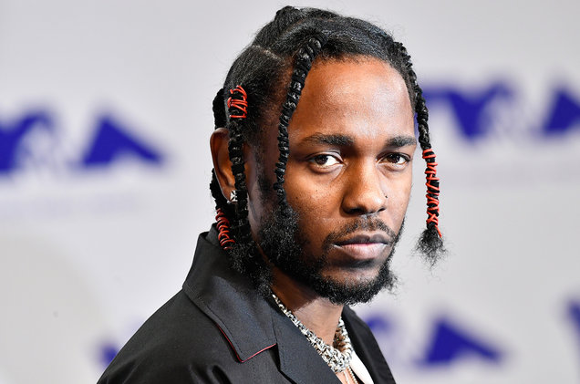

Why Kendrick Lamar is the best rapper
Kendrick is the best rapper this generation because he's created incredible albums that's recieved perfect scores. His music isn't the typical rap music because he is really conscious about his work. He makes bold moves in his music by talking about political situations that the average listener might miss. His album "To Pimp a Butterfly" has won multiple album of the year awards.
His most recent album "DAMN." is his most commercialized album with over 1.2 million sells in one year. It's no denying that Kendrick has never released a dissapointing or bad album up to today which is impressive for somebody that's been around since his time. These are my reasons to why Kendrick Lamar is the best rap artist of this generation and will live on to being a legend.